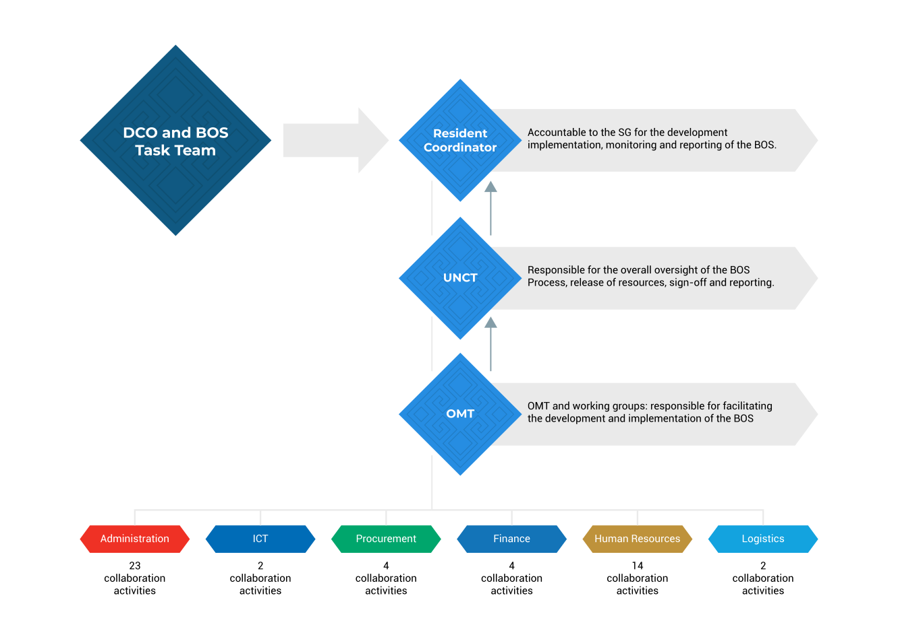

United Nations In Indonesia
Country Results Report 2021
The UN Efficiency Agenda
Under UN reform, the UNCT oversees several internal programmes and strategies designed to improve cost-efficiency, reduce the duplication of functions, and cut administrative and transaction costs in Indonesia. Collectively, these interventions are known as the UN Efficiency Agenda.
 The Business Operations Strategy
The Business Operations Strategy
The Business Operations Strategy (BOS) is a results-based framework designed to eliminate duplication, leverage the common bargaining power of the UN, and maximise economies of scale across the UN system. The new iteration of BOS focuses on common services—those delivered by one UN entity on behalf of one or more others—and reinforces the link between efficient business and effective programming.
In December 2021, the Resident Coordinator signed off the 2021 BOS which divides common activities between five working groups covering administration, human resources, supply, finance, and ICT. By the end of 2021, there were 69 joint UN operations activities including the creation of 17 common Long-Term Agreements (LTAs), which refer to long-term written agreements between a UN entity and a supplier or service provider following a competitive tender process.
The 2021 BOS also included joint operations that responded to the COVID-19 pandemic, for example, the procurement of personal protective equipment for staff. A UNCT-wide training programme to encourage and improve recruitment of people with disabilities—including through adding a disability inclusion statement to UN job vacancy notices—and a presentation on gender-responsive and disability-inclusive procurement, also fell under the BOS.
The 2021 BOS enabled cost-savings of almost US$ 1.4million by year’s end, a figure which corresponds to 99% of its annual cost-saving target. However, restrictions on physical meetings and coordination contributed to only 78% of the 69 identified common activities being fully implemented. Ongoing common activities have been carried forward to 2022.
 The Operations Management Team
The Operations Management Team
In 2021 the Operations Management Team (OMT) that is responsible for administering the BOS also conducted an internal UN survey organized by the International Civil Service Commission, an independent expert body designed to maintain exemplary service to the United Nations’ common system. As part of that survey, the OMT carried out an assessment of whether post adjustment indices reflect the cost of living in Indonesia, and a review of daily subsistence allowances for lodging, meals, and other expenses during official UN missions.
As co-chair of an administration working group for the Indonesia-UN Consultative Forum (IUNCF), the OMT also co-organized a meeting to strengthen the relationship between the UN and the Government of Indonesia in administrative areas.
